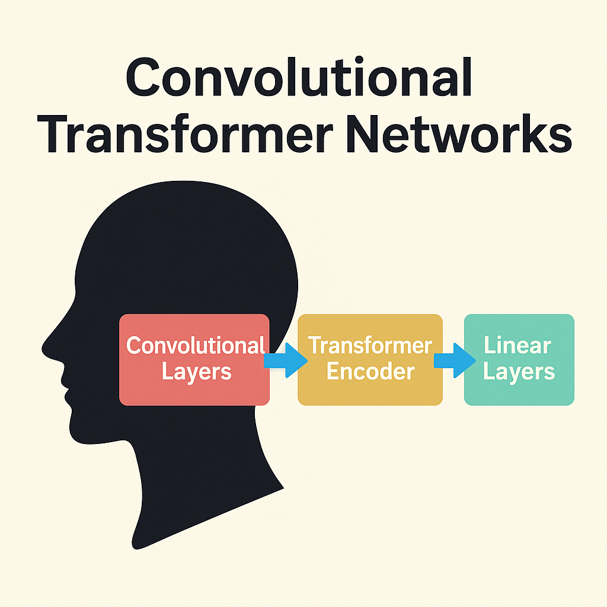
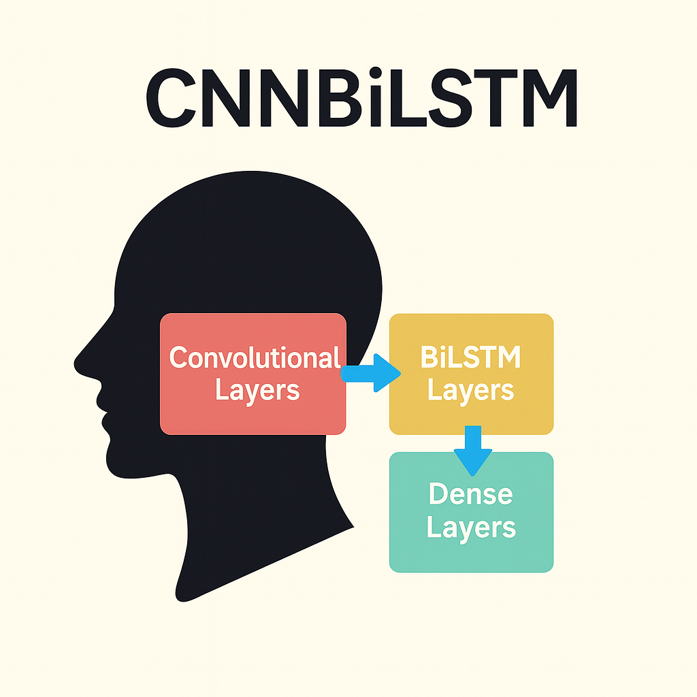
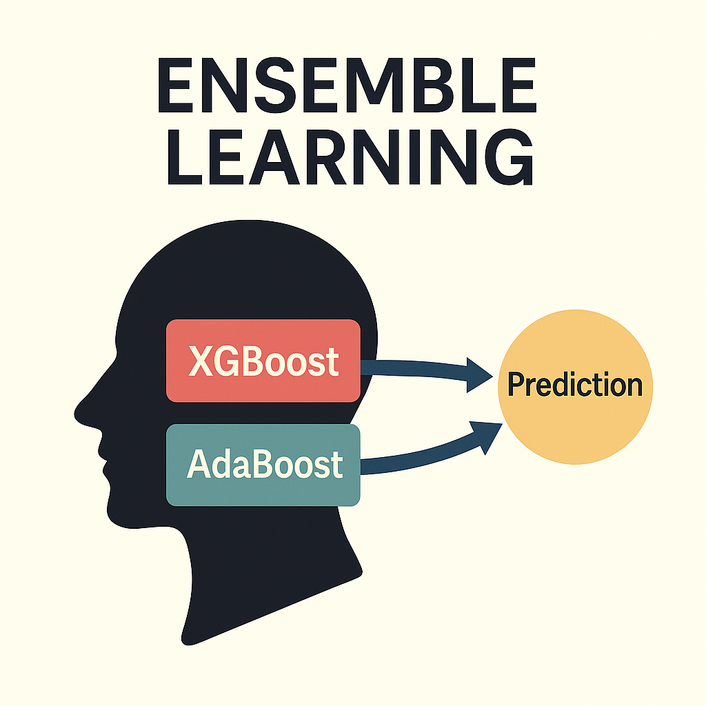

About
I am a Computer Science undergraduate with a strong foundation in Machine Learning, Deep Learning, and Software Development. Currently pursuing my Bachelor's degree at Birla Institute of Technology and Science, Pilani. I have research experience in Machine Learning and Deep Learning, with publications in IEEE journals, and aim to contribute as a Machine Learning Scientist in industry.
Download CVTechnical Skills
- Machine Learning
- Deep Learning
- Computer Vision
- Natural Language Processing
- Software Development
- Web Development
- App Development
Tech Stack
Programming Languages
ML / DL Stacks
Web Development
AI Applications
Databases
DevOps & Tools
Work Experience
IIIT-Delhi
Undergraduate Thesis Researcher
August 2025 - Present
Developing an offline mobile application for Anganwadis in India that enables face-based attendance management, designed to function reliably in low-connectivity environments. Implemented YOLO-based face detection and MobileFaceNet recognition with TensorFlow Lite for on-device processing.
MetaBrainz Foundation
GSoC Contributor
June 2025 - September 2025
Designed and implemented advanced user statistics visualizations to surface actionable insights from long-term behavioral data across MetaBrainz platforms. Built modular and interactive dashboards using modern web technologies, improving admin and contributor decision-making.
AIVID TechVision
Machine Learning Intern
May - July 2024
Collaborated on deep learning models for blur detection and correction in car number plate images to enhance text extraction for identification and security applications. Implemented and fine-tuned models using PyTorch and TensorFlow.
Oracle
Applications Development Intern
May 2025 - July 2025
Built an AI-powered column mapping recommender for Oracle's data import pipeline using semantic cues, past usage, and LLMs via LangChain. Developed and integrated REST APIs into Oracle's product management tools, enabling seamless deployment of AI agents within enterprise workflows.
Wogi India
AI and Software Development Intern
August 2025 - Present
Developed AI-driven surveillance and monitoring systems for industrial environments, enabling real-time detection of safety and compliance violations. Designed intelligent machine health solutions that analyze sensor data to track equipment performance, applying ML to predict failures and optimize maintenance cycles.
WILP - BITS Pilani
AI and Software Development Intern
May 2023 - April 2025
Developed an AI-powered exam management system with automated question generation and randomized allocation using Flask, React, and Firebase. Built an AI-based proctoring solution using TensorFlow, OpenCV, and YOLO for real-time monitoring and cheat detection.
Education
Birla Institute of Technology and Science, Pilani
Bachelor of Engineering in Computer Science
October 2022 - May 2026
Focused on advanced topics in artificial intelligence, including natural language processing and computer vision. Built a strong academic foundation in computer science fundamentals such as object-oriented programming, database management systems, operating systems, and computer networks. Actively involved in research projects, publications, and technical leadership roles, with additional experience in large-scale software development and systems.
Bluebells School International, New Delhi
High School Diploma
May 2017 - May 2022
Explored the basics of machine learning and deep learning while developing strong skills in web development and robotics. Served in leadership positions within technical clubs and school teams, spearheading projects, hackathons, and robotics competitions. These experiences laid the foundation for higher studies in computer science and nurtured early interest in artificial intelligence and software engineering.
Research Papers
Here are my recent research publications in Machine Learning, Deep Learning and related fields.
-
IEEE Journal on Selected Areas in SensorsA Convolutional Transformer Network for Anomaly Detection in Wireless Body Area Networks
-
Big Data & Artificial Intelligence Conference, 2025CNN-BiLSTM Based Deep Neural Architecture for Physiological Anomaly Detection
-
Submitted waiting for reviewVanadium redox flow battery capacity sizing prediction by ensemble-learning algorithms
Convolutional Transformer Network for Anomaly Detection
A Convolutional Transformer Network for Anomaly Detection in Wireless Body Area Networks. Published in IEEE Journal of Selected Areas in Sensors, 2025.
- Deep Learning
- Anomaly Detection
- WBAN
- CNN
- Transformer
CNN-BiLSTM Based Deep Neural Architecture
CNN-BiLSTM Based Deep Neural Architecture for Physiological Anomaly Detection. Presented at IIITB Big Data & AI Conference 2025.
- Deep Learning
- Anomaly Detection
- WBAN
- CNN
- BiLSTM
Vanadium Redox Flow Battery Capacity Sizing
Vanadium redox flow battery capacity sizing prediction by ensemble-learning algorithms for thermal management of solar-electric vehicle charging infrastructure. Submitted to IEEE Transactions on Energy Conversion.
- Ensemble Learning
- XGBoost
- AdaBoost
- VRFB
- Battery Sizing
Projects
Here are some of my favorite projects showcasing Artificial Intelligence implementations and full-stack development.
Unsupervised Neural Machine Translation
Built a multilingual translation pipeline using only monolingual corpora from the Tatoeba dataset and a frozen MarianMT encoder with GRU-based custom decoders. Enabled bidirectional translation across English, French, and Spanish.
- NLP
- Machine Translation
- Unsupervised Learning
Parkinson's Detection via Deep Neural Networks
Developed a deep neural network to classify Parkinson's disease from voice recordings using the UCI dataset. Achieved 96.74% accuracy and 0.9872 AUC, outperforming ensemble methods like XGBoost and Random Forest.
- Deep Learning
- Healthcare AI
- Classification
Conversational AI with Causal Reasoning
Created an interactive platform using role-specific LLMs for applications in therapy and career counselling, enabling causal-aware conversations. Designed and integrated tools for graph-based causal reasoning and knowledge graph annotations.
- LLMs
- Causal Reasoning
- Full-stack Development
Conversations: AI-Powered Student Counselling & Session Management
Built a student counselling platform integrating AI-based counsellors and chat access to school counsellors, enabling session requests, scheduling, and quiz-driven assessments for psychological and career analysis.
- Web Development
- Large Language Models
- Sockets
Get In Touch
I love to connect with fellow researchers and professionals. Whether you have questions about my research, want to collaborate, or discuss opportunities in AI/ML – feel free to reach out.